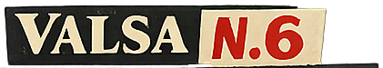
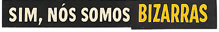

Dorian Gray
1998 · Teatro Carlos Kraid, Curitiba
Adaptação do romance de Oscar Wilde. Codireção com Pavlova Carvalho. Também produção, atuação e design gráfico. Com Oscar Reinstein.
Já nesse trabalho eu fazia várias coisas ao mesmo tempo: adaptei o texto, produzi, atuei, codirigi e ainda assinei o design gráfico. Não era método, era o jeito que dava para fazer — e acabou virando método.
Foto: Felipe Fontoura
Hamlet, Príncipe da Dinamarca
Agosto de 2005 · Teatro Odelair Rodrigues, Curitiba
Direção em parceria com Neto Machado. Em cena: Gustavo Bitencourt e Neto Machado. Participações incidentais de Alan Ploszaj (em vídeo) e Stephanie Mattanó.
O que me interessava no Hamlet era a estrutura. Ela funciona quase como um poema: as coisas rimam, uma ação se repete, os gestos se espelham. Montei a peça inteira, com todos os personagens do texto original — só que cada personagem era um movimento, não um ator. Éramos dois em cena.
Na divulgação, era dado a entender que se tratava de uma montagem integral do texto original.
POGOBOL
2011 · FIAC, Salvador
Direção do solo da atriz Paula Lice, do grupo Dimenti. Ver em Parcerias.
Exposição
2012 · Teatro Novelas Curitibanas, Curitiba
Direção com Cândida Monte e Dimis Jean Sores. Estreia em julho, temporada de vinte apresentações por edital de ocupação da Fundação Cultural de Curitiba. Remontagem no Teatro Universitário de Curitiba (2013).
A peça parte da correspondência real entre Lygia Clark e Hélio Oiticica, ambientada nos anos 1960.
Circulação: Rio de Janeiro · São Luís · São Paulo · Porto Alegre · Salvador · Natal
Colaboração: Cibele Forjaz · Em cena: Eduardo Simões, Mariana Ribeiro e Talita Dallmann · Foto: Dimis Sores

2012 · Prêmio Funarte Nelson Rodrigues: 100 anos do Anjo Pornográfico
Direção. Performance de Leonarda Glück. Estreia na mostra "A Gosto de Nelson", Funarte, Rio de Janeiro.
Entre as referências da montagem: Dario Argento, David Lynch, o burlesco e o vaudeville. A montagem usava teremin.
Trilha original: Edith de Camargo · Design de som: Jo Mistinguett · Figurinos: Amábilis de Jesus · Luz: Wagner Corrêa · Produção: Well Guitti e Cândida Monte
Circulação: Teatro José Maria Santos (Curitiba) · São Luís · Salvador · São Paulo
A Rainha da Beleza
2014 · Mostra Todos os Gêneros, Rumos Itaú Cultural
Processo de intercâmbio com o performer e compositor uruguaio Dani Umpi, que resultou em uma única apresentação. Em cena também: Eidglas Xavier.

2014–2015 · Prêmio Rumos Itaú Cultural
Co-direção artística do projeto concebido por Princesa Ricardo Marinelli. Ações em Curitiba, São Paulo, Natal e Porto Alegre — mostras de trabalhos, oficinas, mesas de debate e ações performáticas.
Assumi a direção artística no meio do processo, porque a Princesa Ricardo adoeceu.
Acho é um convite e um enfrentamento. É dizer: "olha, a gente existe, estamos aqui, se quiser saber o que a gente tá fazendo, venha ver".
ao Correio Braziliense, 2015
Foto: ABOCA Audiovisual, Natal, 2015
2021 · Sala Jardel Filho, Centro Cultural São Paulo
6ª Mostra de Dramaturgia em Pequenos Formatos, CCSP
Direção do solo de Leonarda Glück — parceira de trabalho há mais de vinte anos. Um manifesto cênico que parte da experiência transexual da autora e marca seus 25 anos de carreira.
A montagem foi adiada pela pandemia e o processo aconteceu quase um ano inteiramente online: Leonarda em São Paulo, eu em Piçarras.
Foi um convite que eu quase não aceitei. Era um texto sobre a experiência da Leonarda como mulher trans no Brasil, e eu não sabia onde ia poder contribuir. Lendo e relendo, fui vendo o quanto aquele texto também falava de coisas que dizem respeito a todo mundo.
Algumas ficções são permitidas e outras não. Quando se trata de gênero, as pessoas tendem a ficar muito assustadas.
Bitencourt propõe uma encenação de estética fragmentada tanto pelos elementos cênicos, quanto pelos limites da ficção e da realidade.
Celso Faria · eUrbanidade
Criação, texto e interpretação: Leonarda Glück · Trilha original: Jo Mistinguett · Luz: Wagner Antônio · Assistência de iluminação: Dimitri Luppi · Vídeo e projeções: Ricardo Kenji · Figurino: Fabianna Pescara e Renata Skrobot · Ilustração: André Costa · Direção de produção: Igor Augustho · Produção executiva: Lydia Arruda · Design gráfico: Pablito Kucarz · Fotografia: Alessandra Haro · Produção: Pomeiro Gestão Cultural
Circulação 2022: Festival de Teatro de Curitiba, 30ª edição · MITbr – Plataforma Brasil / MITsp, Teatro João Caetano · temporada no Sesc Belenzinho, São Paulo